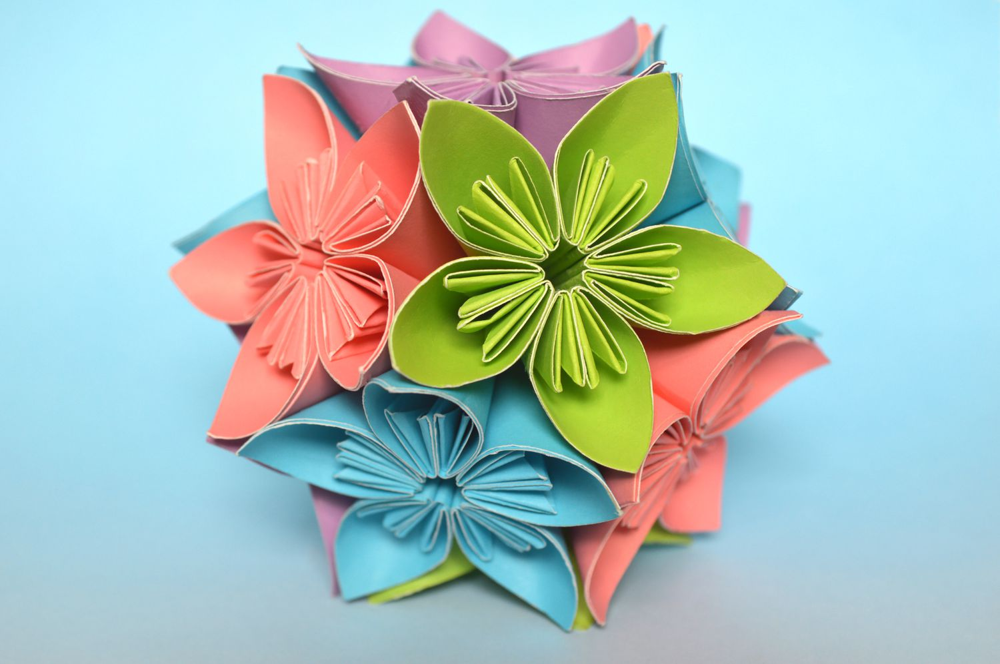
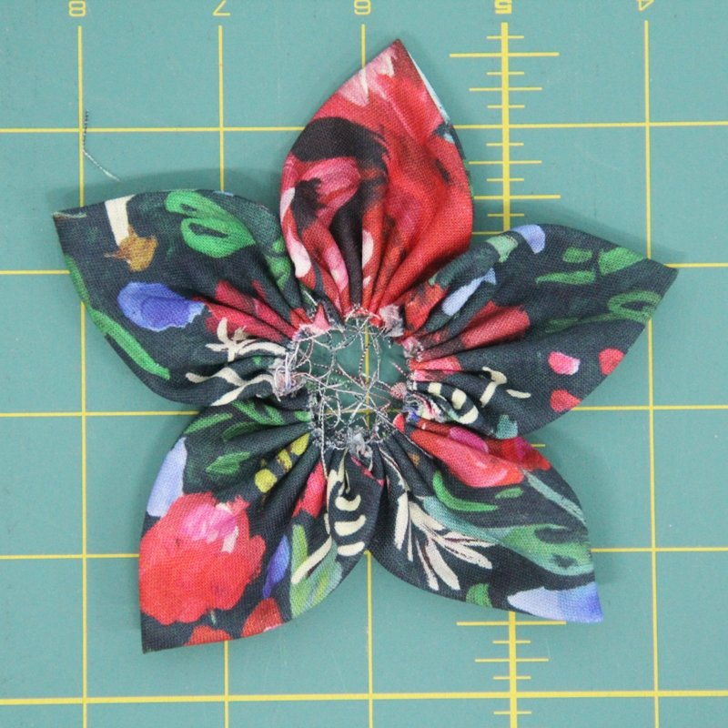
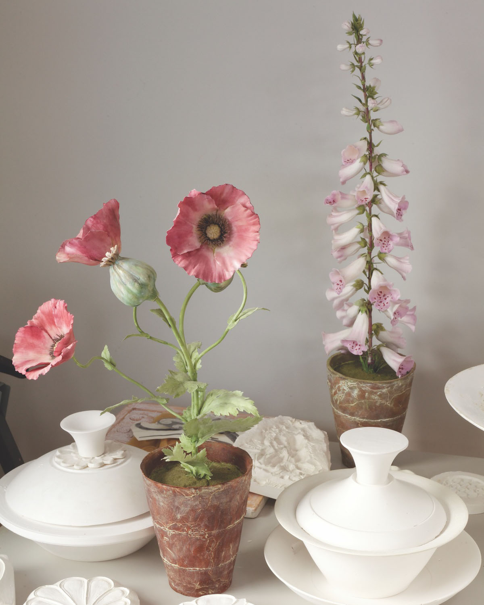
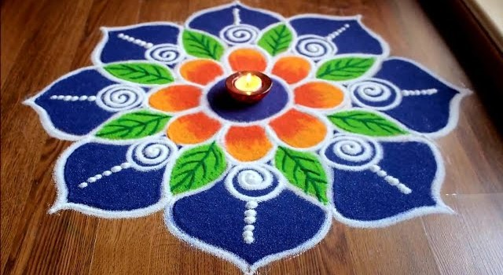

FLOWER CREATION
Introduction
This website doubles as an archive and instructional for flower creation! I chose to create this wesbite so that it will be easier to navigate the idea of making your own flowers. Many people struggle to get started or don't know what to do, which is why I have included different pages filled with useful information for anyone to use! Learn about the history of your favorite flowers, get inspired and make your own flowers now!

Historical Methods
Before heading over to the other pages, take a look at the different ways that flowers used to be created. I will be showing a few examples in which were popular many years ago, some still being used as a method to create unique flowers in today's society! Different countries used a variety of methods such as paper, fabric or porcelain as they weren't able to collect or obtain the fanicer flowers made from gold or delicate stones. So, artificial flowers were made instead to accompany clothing, jewelry, or hair accessories which were cherished by many. In order to decorate houses, ordinary folk settled with cheaper materials that were as close to the actual feel and look of flowers as the higher class used more costly items.
Paper
Work in progress..
Fabric
Work in progress..
Porcelain
Work in progress..
Rangoli
Work in progress..
